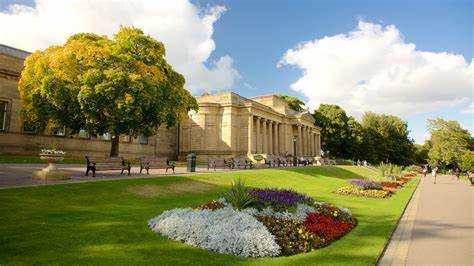
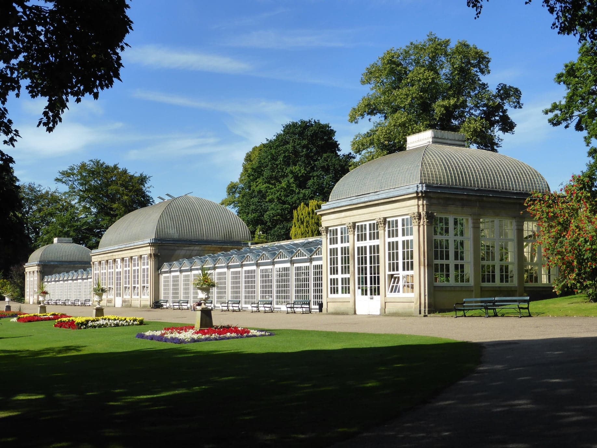

There are many locations around campus where you can take a break and set up a picnic.

Weston Park (Expedia)
Accompanied by the Weston Park Museum to vist afterwards, Weston Park is a large open park with many great locations to enjoy a picnic. As well as observing the wonderful architecture of the Mueseum, there is a lake and a memorial to view. It is a nice place to relax and interact with nature
Crookes Valley Park is a beautiful open park, filled with wildlife, with many spots to take a seat and enjoy the large lake in the center of the park. You can sit on the benches placed along the edge of the lake or on the grass on a dry day to enjoy the scenary.
Devonshire Green Park is close to campus and in the city center! You can find a range of interesting spray painted architecture. It's great if you are finding somewhere different and more lively to enjoy a meal.

The Botanical Garden (Where to go with kids, 2024)
Although a little far from campus, if you want to enjoy a view of gorgeous flowers surrounded by nature, the Botanical Gardens is the place for you. It is a great place to relax and reconnect with nature.
Terry Robinson (2010) SK3387 : Bowling Club, Crookes Valley Park, Crookes Valley Road, Sheffield [https://www.geograph.org.uk/photo/2093015] (Accessed: 3 November 2024)